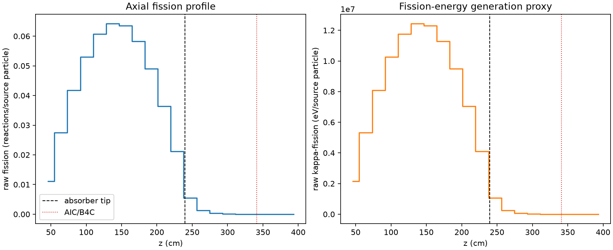
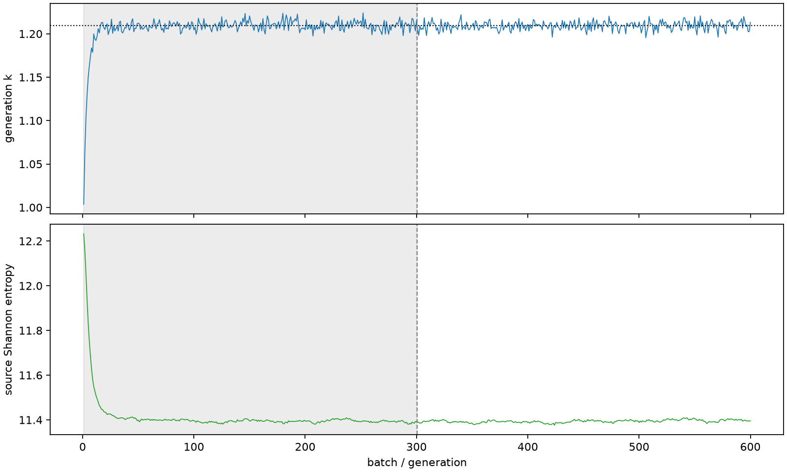

| field | value |
|---|---|
| experiment | V2-STAGE_128_OGRENCI_04-0019 |
| k | 1.2092833752445744 |
| MC standard error | 0.00017379143860229835 |
| seconds | 1021.4113039789991 |
| acceptance | not_assessed |
| convergence | review_required |
Completed is output integrity only; physical and statistical review required. Zero tallies do not prove zero production or zero uncertainty.
| diagnostic | value |
|---|---|
| geometric fuel voxels | 5280 |
| zero fission tally voxels | 375 |
| low signal fuel voxels | 1376 |
| low signal fission share | 7.827954654849295e-05 |
| low signal kappa share | 7.831155000879578e-05 |
| important fission share | 0.9501358161955928 |
| previous filter included | 3904 |
| duration estimate s | 1562.5173488400023 |
| actual minus estimate s | -541.1060448610033 |
| fission relative MC error | statistics |
|---|---|
| all_geometric_fuel | {"voxels": 5280, "positive_mean_voxels": 4905, "zero_mean_voxels": 375, "undefined_relative_error_voxels": 375, "median": 0.011349640408923858, "p95": 0.8239982520137196, "maximum": 1.0000000000000002} |
| low_signal | {"voxels": 1376, "positive_mean_voxels": 1001, "zero_mean_voxels": 375, "undefined_relative_error_voxels": 375, "median": 0.5868476534028422, "p95": 1.0, "maximum": 1.0000000000000002} |
| important_95pct | {"voxels": 2557, "positive_mean_voxels": 2557, "zero_mean_voxels": 0, "undefined_relative_error_voxels": 0, "median": 0.007529534845718774, "p95": 0.011276164820322515, "maximum": 0.013208554577077227} |
| outside_previous_filter | {"voxels": 1376, "positive_mean_voxels": 1001, "zero_mean_voxels": 375, "undefined_relative_error_voxels": 375, "median": 0.5868476534028422, "p95": 1.0, "maximum": 1.0000000000000002} |
| kappa_fission relative MC error | statistics |
|---|---|
| all_geometric_fuel | {"voxels": 5280, "positive_mean_voxels": 4905, "zero_mean_voxels": 375, "undefined_relative_error_voxels": 375, "median": 0.011337237748828121, "p95": 0.8245669288649106, "maximum": 1.0000000000000002} |
| low_signal | {"voxels": 1376, "positive_mean_voxels": 1001, "zero_mean_voxels": 375, "undefined_relative_error_voxels": 375, "median": 0.5868888911932613, "p95": 1.0, "maximum": 1.0000000000000002} |
| important_95pct | {"voxels": 2557, "positive_mean_voxels": 2557, "zero_mean_voxels": 0, "undefined_relative_error_voxels": 0, "median": 0.007521032328568446, "p95": 0.011263028189199316, "maximum": 0.01319435402644555} |
| outside_previous_filter | {"voxels": 1376, "positive_mean_voxels": 1001, "zero_mean_voxels": 375, "undefined_relative_error_voxels": 375, "median": 0.5868888911932613, "p95": 1.0, "maximum": 1.0000000000000002} |
| axial bin | fission share | kappa-fission share |
|---|---|---|
| 1 | 0.02243289996413637 | 0.022433836332850232 |
| 2 | 0.05565718911878659 | 0.05565716517578608 |
| 3 | 0.08450671741170208 | 0.08450622883709566 |
| 4 | 0.10732957036185056 | 0.10732883897662568 |
| 5 | 0.12291267977104774 | 0.12291205904294772 |
| 6 | 0.1300260015504784 | 0.1300252652515598 |
| 7 | 0.1288021556844444 | 0.1288016711373268 |
| 8 | 0.11809547921250994 | 0.1180947624332327 |
| 9 | 0.099213978675706 | 0.09921327152764671 |
| 10 | 0.07367418189195703 | 0.07367381879765125 |
| 11 | 0.04284683144288605 | 0.04284670082474567 |
| 12 | 0.011184922804123332 | 0.01118784849232568 |
| 13 | 0.0025274833502631914 | 0.0025283322650776355 |
| 14 | 0.0005933757288937133 | 0.0005936005207440721 |
| 15 | 0.00014937655667177451 | 0.00014942033445140075 |
| 16 | 3.5340403983677406e-05 | 3.535656848742978e-05 |
| 17 | 9.011792281696575e-06 | 9.017086507886158e-06 |
| 18 | 2.137368446198023e-06 | 2.139362730566562e-06 |
| 19 | 5.942828851842008e-07 | 5.9430741900209e-07 |
| 20 | 7.262694622705267e-08 | 7.27247880335102e-08 |
Histories include the inactive-to-active transition at batch 300. kappa-fission approximates fission energy production, not total heat deposition.

